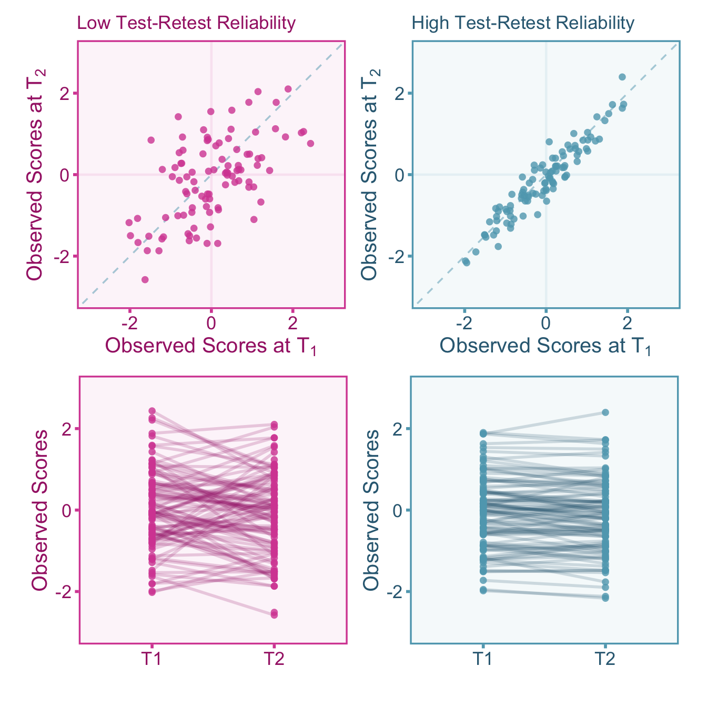
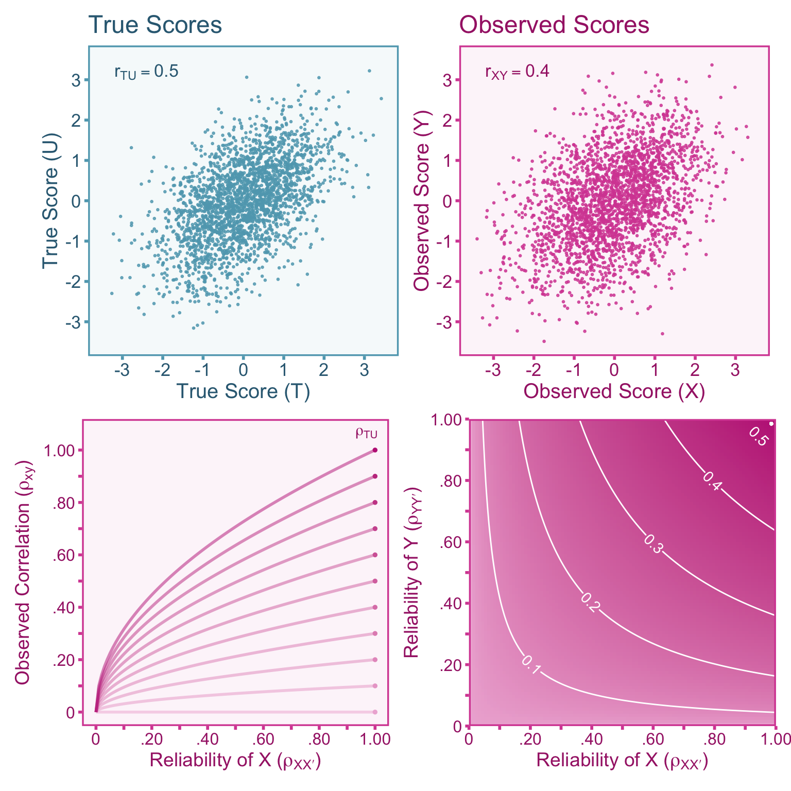
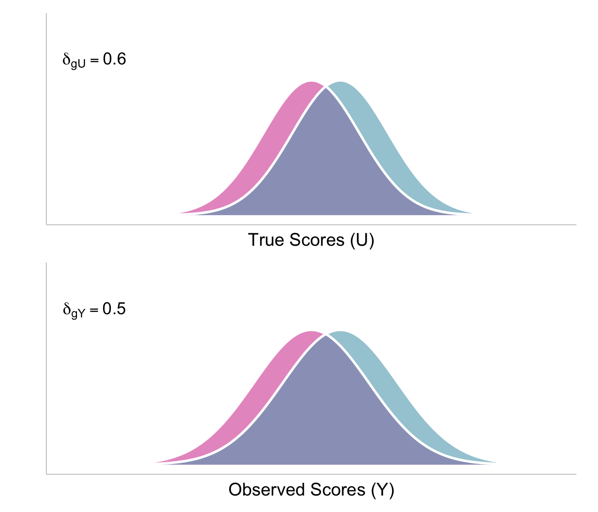

5 Unreliability
5.1 Introduction
In general terms, measurement is the process of quantifying an attribute or characteristic of something. In scientific measurement, the measurand is the quantity or the attribute we intend to measure. In the psychological sciences, measurands usually take the form of constructs such as intelligence or anxiety. Often the goal of measurement is to produce quantities (i.e., scores) that accurately reflect the measurand. However, quantities that do not reflect a real attribute can still have useful predictive value (e.g., socio-economic status). It is important to note that measures are not all created equal, some perform better than others. Ideally, measures should produce scores that are consistent and repeatable, this is referred to as the reliability of a measure. A high quality measure should produce highly reliable scores. This section will review what reliability is in theory, how to estimate reliability, and how to correct effect sizes for measurement error.
5.2 Reliability in True Score Theory
True score theory (or classical test theory) is a mathematical formalization of observed scores obtained from a measurement procedure. Observed scores, \(X_m\), is defined as a score obtained upon measurement \(m\). The true score model assumes that each individual, has a true score, \(T\), that stays constant over repeated measurements. Variation in observed scores over repeated measurements is due to measurement-specific error, \(E_{m}\),
\[ X_{m} = T+E_{m}. \]
Here, measurements are strictly parallel. Strictly parallel measurements have the following four properties (p. 69, Haertel 2006):
- Measurements have identical specifications. That is, each measurement uses the same measurement procedure.
- The distribution of observed scores for each measurement are identical: \(f(X_1) = f(X_2) = \ldots\).
- Any set of two measurements are assumed to covary the same as any other set of two measurements: \(\sigma_{X_1 X_2} = \sigma_{X_2 X_3} = \sigma_{X_1 X_3} = \ldots\).
- Each measurement equally covaries with any other variable: \(\sigma_{X_1 Y} = \sigma_{X_2 Y} = \ldots\).
True scores can be defined as the expected value (i.e., the mean) of observed scores over repeated measurements such that, \(\mathbb{E}_m[X_{m}]=T\). Given this assumption, it follows that the average of the resultant errors is zero across repeated measurements, \(\mathbb{E}_m[E_{m}]=0\). It also follows that the covariance between observed scores from measurement to measurement must only be attributable to the variation in true scores (\(\sigma_{XX'}=\sigma^2_{T}\)) and therefore true scores and errors are independent (\(\sigma_{ET}=0\)). The independence between true scores and errors provide convenient parsing of the variance in observed scores,
\[ \sigma_{X}^2 = \sigma_T^2 + \sigma_{E}^2. \tag{5.1}\]
In practice, the goal is to obtain observed scores that closely resemble true scores, therefore it is important to minimize measurement error variance (\(\sigma^2_E\)). If \(\sigma^2_E = 0\), then the scores can be said to have perfect reliability, that is, observed scores do not vary upon repeated measurements and are thus identical to true scores. In practice, this is virtually never the case. In true score theory, reliability can be defined as the correlation between observed scores in parallel measurements,
\[ \rho_{XX'}=\frac{\sigma_{XX'}}{\sigma_X\sigma_{X'}} = \frac{\sigma_T^2}{\sigma^2_X}. \]
The reliability can also be expressed by the square of the correlation between observed scores and true scores. To understand why this is the case, note that the covariance between parallel forms of a measure is equivalent to the covariance between observed scores and true scores, \(\sigma_{XT}=\)\(\sigma_{(T+E)T}=\)\(\sigma^2_T + \sigma_{TE}=\)\(\sigma^2_T = \sigma_{XX'}\) (Haertel 2006),
\[ \rho_{XX'} = \frac{\sigma_T^2}{\sigma_X^2} = \frac{\left(\sigma_T^2\right)^2}{\sigma_X^2 \sigma_T^2}= \frac{\sigma_{XT}^2}{\sigma^2_X\sigma^2_T} = \rho^2_{XT}. \tag{5.2}\]
To visualize how reliability relates true scores and observed scores see the structural diagram Figure 5.1.
It is important to emphasize that true scores are expected values over repeated observations and they do not necessarily correspond to an actual, tangible attribute of interest (Borsboom and Mellenbergh 2002). As a result, every measurement has a true score, regardless of whether it gauges a concrete attribute or not. For example, if we construct a test by summing the responses to the items: “how many languages can you confidently hold a conversation in?” and “Estimate the number of photos you’ve taken in the last year across all devices”. Even in such a nonsensical measure, the test’s composite score retains a true score, but this true score does not mirror a tangible reality.

5.3 Reliability vs Validity
Reliability and validity are distinct properties in measurement. Validity pertains to whether the scores produced by a measure reflects the quantities it is intended to measure (p. 14 Kelley 1927). According to Borsboom, Mellenbergh, and Van Heerden (2004), a measure is valid if both of the following statements are true:
The attribute exists.
Variations in the attribute causally produce variations in the outcomes of the measurement procedure.
Borsboom’s formulation of validity is simpler and more practical than other formulations such as Cronbach and Meehl’s (1955) nomological network approach to validity. It is important to note that even if an attribute does not exist (statement 1), scores may still provide predictive utility. For example, socio-economic status (SES) is a formative quantity that is constructed from a composite of education, income, occupation status, etc. Although SES is not causal to these indicators, SES can still be used as a predictor of important life outcomes.
5.4 Estimating Reliability
In practice, reliability must be estimated through indirect methods, this is due to the fact that true scores and errors are unknown. There are many reliability estimators that can be used, however we will go over a selection of internal consistency estimators as well as test-retest stability estimators.
5.4.1 Internal Consistency Estimators
Taking multiple measurements and then averaging tends to provide a more stable estimate of true values. For instance, let’s consider the case of Francis Galton (1907), who conducted a study involving 787 individuals estimating the weight of an ox. On average, each person’s estimate deviated by approximately 37 pounds from the actual weight of the ox, which was recorded as 1198 pounds. However, when all the guesses were averaged together, the combined estimate was 1207 pounds, just a 9 pound difference from the true value. This principle can be extended to broader applications, such as measuring psychological constructs. If we were to assess someone’s level of extraversion using ratings from their mother, father, friend, and sibling, the average of their combined assessments would yield a more reliable score compared to relying solely on a single evaluator. So to create a more stable composite score (\(X\)), we can take the score from \(\kappa\) items (\(x\)) and sum them such that,
\[ X = x_1 + x_2 +...+x_\kappa. \]
The most commonly reported reliability estimator in the psychological sciences is coefficient alpha, also referred to as Cronbach’s alpha. Coefficient alpha, along with other internal consistency estimators, serves the purpose of assessing the reliability of composite scores comprising multiple item scores. Coefficient alpha was first derived by Lee Cronbach (see equation 13, Cronbach 1951) only requires three parameters to calculate, the number of measurements (\(\kappa\)), the sample variances of each item (\(S^2_{x_m}\)), and the variance of the composite score (\(S^2_{X}\)). Coefficient alpha will estimate the reliability of the composite observed score (\(r_{XX'}\)),
\[ _\alpha r_{XX'} = \frac{\kappa}{\kappa-1}\left( 1 - \frac{\sum_{m=1}^\kappa S^2_{x_m}}{S^2_{X}} \right). \tag{5.3}\]
With tighter assumptions (see Haertel 2006), the formula for coefficient alpha can be simplified to just two parameters: the number of measurements (\(\kappa\)) and the average correlation between measured scores (\(\bar{r}_{x_i x_j}\), where \(i\neq j\)). This formula is known as Spearman-Brown’s prophecy (see equation III of Charles Spearman 1910; or the last equation on page 299 of Brown 1910),
\[ _\text{sb} r_{XX'}= \frac{\kappa \bar{r}_{x_i x_j}}{1+(\kappa-1)\bar{r}_{x_i x_j}} \tag{5.4}\]
This can be simplified further if we have two observed item scores. This formulation is a variation of split-half reliability:
\[ _\text{sh}r_{XX'}= \frac{2r_{x_1 x_2}}{1+r_{x_1 x_2}} \tag{5.5}\]
All of these reliability estimators measure internal consistency, therefore they do not account for error outside of the measurement-specific error. There are other sources of error that internal consistency reliability estimates do not account for, such as transient error or rater-specific error.

5.4.2 Test-Retest Stability Estimator
Transient errors represent fluctuations in observed scores over time. These fluctuations, even if they are systematic (e.g., fatigue over the course of a single day), add extraneous within-person variance that can mask individual differences. Considering transient fluctuations as error depends on the research goal, so it is important for researchers to take care in considering which variance components should be considered error in their study (see Section 5.4.3). To estimate test-retest reliability, we can compute the correlation between the measurement at time 1 (\(X_{t_1}\)) and the second measurement at time 2 (\(X_{t_2}\)),
\[ _\text{tr}r_{XX'}= \text{corr}(X_{t_1}X_{t_2}). \]
Note that calculating the pearson correlation coefficient between time-points ignores systematic changes (e.g., practice effects). We can visualize test-retest reliability in Figure 5.2 where the top panels show the correlations between time points and the bottom panels show the within-person change between time-points for scores with high and low reliability.

5.4.3 Sources of Measurement Error
Measurement error can itself be broken down into multiple sources of error. Depending on the study, different sources of error may be more relevant than others. Different reliability estimators will account for different sources of error therefore it is important for researchers to choose the right reliability estimator for their study. A description of four of the most common sources of error is adapted from table 1 of Wiernik and Dahlke (2020):
Random Response Error: Genuine randomness in responses. Examples include: motor errors and variation in response time.
Time/Environment-Specific (Transient) Error: Fluctuations in scores as a result of the specific time or environment of the measurement. For instance, if researchers administered an ability test to a sample of undergraduate students throughout the course of a day, the student’s who complete the test at the end of the day will likely perform worse than participant’s who completed due to fatigue rather than ability. Errors due to illness, mood, hunger, environmental distractors, etc. all fall under the umbrella of transient errors.
Instrument-Specific Error: Error due to the specific content or make-up of the measurement instrument. For example, a psychological scale using Likert items may show participant’s idiosyncratic interpretations of questions and response options rather than their standing on the latent construct.
Rater/Observer-Specific Error: Errors induced by idiosyncratic biases of individual raters and rater by ratee interactions (e.g., Teacher A gives higher grades to students who stay after class).
Different estimators of reliability account for different sources of measurement error therefore depending on the research design, it is important to carefully choose which reliability is most relevant for your use case. Note that even if two estimators account for the same types of measurement error, they likely hold different assumptions that may be violated in a given research context.
| Estimator | Description | 1 | 2 | 3 | 4 |
|---|---|---|---|---|---|
| Coefficient Alpha | Internal consistency coefficient for composite measures. | X | X | ||
| Coefficient Omega | Internal consistency coefficient for composite measures with specified factor structure. | X | X | ||
| Split-Half | Internal consistency coefficient for measurements that are split into two halves. | X | X | ||
| Kuder-Richardson 20 | Internal consistency when observed scores are binary (special case of coefficient alpha). | X | X | ||
| Item Response Theory Reliability | Reliability coefficient derived from item response theory (as opposed to classical test theory) | X | X | ||
| Inter-Rater/Inter-Observer Reliability | Consistency in scoring between raters/observers. | X | X | ||
| Test-Retest | Stability coefficient for repeated measurements across time | X | X | ||
| Delayed Alpha | Average of all possible split-half reliabilities | X | X | X | |
| G-Coefficient | Reliability coefficient derived from generalizability theory (G-theory). Can incorporate any source of error if enough data is present. | X | X | X | X |
5.5 Correction for Bias in Correlations
5.5.1 Defining the Target Quantity
Continuing with our emphasis on clearly defining our quantity of interest prior to applying any corrections, let us define it here. Our target is the population correlation between true scores of our independent and dependent variables. We can define the observed scores of the independent and dependent variables \(X\) and \(Y\) as,
\[ X=T+E_X \]
\[ Y=U+E_Y. \]
Where \(T\) and \(U\) are the true scores for the independent and dependent variables, respectively. The population true score correlation can thus be be denoted by, \(\rho_{TU}\), and can be defined as the standardized covariance,
\[ \rho_{TU} = \frac{\sigma_{TU}}{\sigma_{T}\sigma_{U}}. \]
In a given study, we will only have access to the observed scores of the independent and dependent variables, therefore the study correlation is \(r_{XY}\). The relationship between the observed correlation and the true population correlation can be defined as,
\[ r_{XY} = a\rho_{TU} + \varepsilon. \]
Where \(a\) is the artifact attenuation factor (we will see that measurement error attenuates rather than inflates the correlation). An unbiased estimate of the true score population correlation (\(\rho_{TU}\)) can then be calculated by dividing the observed score correlation by an estimate of the artifact attenuation factor,
\[ r_{TU} = \frac{r_{XY}}{\hat{a}}. \]
The measurement model can be visualized in Figure 5.3.

5.5.2 Artifactual Correction for Unreliability
Measurement error induces systematic bias in effect size estimates such as correlation coefficients C. Spearman (1904). In the population, let us assume there is some factor \(a\) that accounts for the systematic bias in observed score correlations (\(\rho_{XY}\)) relative to true score correlations (\(\rho_{TU}\)), such that
\[ \rho_{XY} = a \rho_{TU}. \]
Since the correlation is defined as the covariance standardized by the standard deviations, the population correlation between true scores, \(T\) and \(U\), is defined as,
\[ \rho_{TU}=\frac{\sigma_{TU}}{\sigma_{T} \sigma_{U}}. \]
Likewise the correlation between the observed scores, \(X\) and \(Y\), would be the observed covariance divided by the observed standard deviations,
\[ \rho_{XY} =\frac{\sigma_{XY}}{\sigma_{X} \sigma_{Y}}. \]
However, if we assume that there is no covariance between errors in \(X\) and \(Y\) (\(\sigma_{E_X E_Y} = 0\)), then the covariance between observed scores is only attributable to the covariance between true scores, therefore \(\sigma_{XY} = \sigma_{TU}\). This means that the observed score correlation can be expressed as,
\[ \rho_{XY} =\frac{\sigma_{TU}}{\sigma_{X} \sigma_{Y}}. \tag{5.6}\]
Now the only difference between the observed score correlation and the true score correlation is the standard deviations in the denominator. In the presence of measurement error, the observed score standard deviations (\(\sigma_X\) and \(\sigma_Y\)) will be larger than the true score standard deviations (\(\sigma_{T}\) and \(\sigma_{U}\)). Using the definition of reliability, we can show how the observed variance is inflated compared to the true variance as a function of reliability. Since the reliability is defined as the ratio of true variance to total observed variance (see Equation 5.2), we can see how reliability inflates the observed variance,
\[\begin{aligned} \sigma^2_X &=\sigma^2_{T} \left(\frac{\sigma^2_{X}}{\sigma^2_{T}} \right)\\[.3em] &= \sigma^2_{T}\left(\frac{1}{\rho_{XX'}} \right)\\[.3em] &= \frac{\sigma^2_{T}}{\rho_{XX'}}. \end{aligned}\]
Therefore the observed standard deviation is,
\[ \sigma_X = \frac{\sigma_{T}}{\sqrt{\rho_{XX'}}}. \tag{5.7}\]
Since the reliability, and its square root, will be less than 1, then the observed score variance will be larger than the If we use the definition of an observed score correlation (Equation 5.6), then we can replace \(\sigma_X\) and \(\sigma_Y\) with \(\frac{\sigma_{T}}{\sqrt{\rho_{XX'}}}\) and \(\frac{\sigma_{U}}{\sqrt{\rho_{YY'}}}\), respectively. Now we can see how the observed score correlation differs from the true score correlation:
\[\begin{aligned} \rho_{XY} &= \frac{\sigma_{T U}}{\left[\frac{\sigma_{T}}{\sqrt{\rho_{XX'}}} \right] \left[ \frac{\sigma_{U}}{\sqrt{\rho_{YY'}}} \right] } \\[.3em] &= \frac{\sigma_{T U}}{\sigma_{T}\sigma_{U}} \sqrt{\rho_{XX'}}\sqrt{\rho_{YY'}}\\[.3em] &= \rho_{TU} \sqrt{\rho_{XX'}}\sqrt{\rho_{YY'}} \end{aligned}\]
This attenuation formula was first derived by Charles Spearman (1904). See Figure 5.4 for a visualization of the attenuation. Note that this formulation requires that there is no correlation between \(E_X\) and \(E_Y\) (\(\rho_{E_X E_Y}=0\)).

Let us recall that we can express the observed score correlation as a function of the true score population correlation (i.e., the target quantity, \(\rho_{TU}\)),
\[ r_{XY} = a\rho_{TU} + e. \]
Where \(e\) is the sampling error and \(a\) is the artifact attenuation factor. \(a\) can now be replaced with the square root of the reliabilities of \(X\) and \(Y\).
\[ r_{XY} = \left(\sqrt{\rho_{XX'}}\sqrt{\rho_{YY'}}\right) \rho_{TU} + e. \]
Therefore we can correct the observed score study correlation by dividing by an estimate the attenuation factor using,
\[ r_{TU} = \frac{r_{XY}}{\hat{a}} = \frac{r_{XY}}{\sqrt{r_{XX'}}\sqrt{r_{YY'}}} \]
The corrected correlation coefficient is an unbiased estimator of the target quantity, \(\rho_{TU}\). We also need to obtain the standard error of the corrected correlation coefficient. The standard error of the uncorrected correlation, \(se\), can be adjusted directly with one of two formulas:
- If the reliability coefficients are estimated from the same sample as the correlation, then the standard error formula is,
\[ se_c = \frac{se}{\sqrt{r_{XX'}}\sqrt{r_{YY'}}} \]
- If the reliability coefficients and the correlation are all estimated from different samples (\(n\) will denote the sample size of the standardized mean difference, \(n_{r_{XX'}}\) and \(n_{r_{YY'}}\) and will denote the sample size of the respective reliability coefficients) then the standard error of the corrected correlation is approximately (for the derivation, see the appendix of this section),
\[ se(r_{TU}) = \sqrt{\frac{se(r_{XY})^2}{r_{XX'}r_{YY'}} + \frac{r^2_{XY}\left(1-r^2_{XX'}\right)^2}{4(n_{r_{XX'}}-1)r_{XX'}^3r_{YY'}} + \frac{r^2_{XY}\left(1-r^2_{YY'}\right)^2}{4(n_{r_{YY'}}-1)r_{XX'}r_{YY'}^3}} \tag{5.8}\]
The two ways of calculating standard error are due to the fact that when the reliability and correlation coefficient are computed from the same sample, their sampling errors will be correlated (Bobko and Rieck 1980). Note that if you only want to correct for unreliability in one variable, than you can set the reliability of the other variable to 1 in all the equations above.
5.6 Correction for Bias in Standardized Mean Differences (d)
5.6.1 Defining the Target Quantity
Prior to correcting for measurement error let us define our target. Our target is the difference in the means of group \(A\) and \(B\) with respect to the true scores, \(U\), of our dependent variable, \(Y\),
\[ Y_A = U_A + E_A \]
\[ Y_B = U_B + E_B. \]
Where \(U_A\) and \(U_B\) are the true scores for group \(A\) and group \(B\), respectively. The true score standardized mean difference can thus be be denoted by, \(\delta_{gU}\) (\(g\) indicates the grouping variable, and \(U\) denotes the continuous true score outcome), and can be defined as the mean difference divided by the within-group standard deviation,
\[ \delta_{gU} = \frac{\mu_{U_A} - \mu_{U_B}}{\sigma_{U}}. \]
Where \(\mu_U\) indicates the population mean of true scores. The relationship between the population true score standardized mean difference (\(\delta_{gU}\)) can be related to the observed study standardized mean difference with the following formulation:
\[ d_{gY} = a\delta_{gU}+e. \]
Where \(a\) is the attenuation factor induced by measurement error and \(e\) denotes sampling error. To obtain an unbiased estimate of true score standardized mean difference, \(\delta_{gU}\), we can correct the observed standardized mean difference by dividing by an estimate of \(a\),
\[ d_{gU} = \frac{d_{gY}}{\hat{a}}. \]
5.6.2 Artifact Correction for Unreliability
The population mean of true scores and observed scores are identical since measurement error only affects the variance in scores. Therefore the population mean difference is equal between true and observed scores:
\[ \mu_{U_A} - \mu_{U_B} = \mu_{Y_A} - \mu_{Y_B} \]
Note that this means that an unstandardized mean difference is not biased by measurement error. Since the mean difference in true scores and observed scores are the same, the observed score population standardized mean difference can also be expressed as the mean difference of true scores standardized by the observed score standard deviation,
\[ \delta_{gY} = \frac{\mu_{Y_A} - \mu_{Y_B}}{\sigma_Y} = \frac{\mu_{U_A} - \mu_{U_B}}{\sigma_Y} \]
We know from Equation 5.2 that the standard deviation of true scores, \(\sigma_U\), can be expressed as a function of reliability and the observed score standard deviation,
\[ \sigma_U = \sigma_Y\sqrt{\rho_{YY'}} \tag{5.9}\]
Therefore the true score standardized mean difference could be corrected for by dividing the observed score standardized mean difference by the reliability,
\[ \delta_{gU} = \frac{\mu_{U_A} - \mu_{U_B}}{\sigma_Y\sqrt{\rho_{YY'}}} = \frac{\delta_{gY}}{\sqrt{\rho_{YY'}}} \]
The reliability in this case is the within-group reliability (\(\rho_{YY'}=\rho_{YY'_A}=\rho_{YY'_B}\)) which is assumed to be equal between groups. Similarly, a sample estimator of the observed score standardized mean difference can be expressed as,
\[ d_{gY} = \frac{\overline{Y}_A - \overline{Y}_B}{S_{Y_P}} = \frac{\overline{U}_A - \overline{U}_B}{S_{Y_P}} \]
Where \(\overline{Y}\) and \(\overline{U}\) are sample means of observed scores and true scores, respectively. The within-group standard deviation of observed scores can be estimated by pooling the standard deviation from both groups,
\[ S_{Y_P} = \sqrt{\frac{(n_A+1)S^2_{Y_A}+(n_B+1)S^2_{Y_B}}{n_A + n_B - 2}}. \]
Where \(n_A\) and \(n_B\) are the sample sizes within group \(A\) and group \(B\), respectively.
Pooled Reliability
To obtain the pooled standard deviation of true scores, we can correct the observed score standard deviations for measurement error such that, \(S^2_{Y}=r_{YY'}S^2_{U}\) (similar to what we see in Equation 5.9). Therefore we can compute the pooled true score standard deviation (\(S_{U_P}\)) with,
\[ S_{U_P} = \sqrt{\frac{(n_A+1)\left(S_{Y_A} \sqrt{r_{YY'_A}}\right)^2+(n_B+1)\left(S_{Y_B} \sqrt{r_{YY'_B}}\right)^2}{n_A + n_B - 2}}. \]
Alternatively, we can pool the reliability and the true score standard deviations separately,
\[ S_{Y_P} = \sqrt{\frac{(n_A+1)S_{Y_A}^2+(n_B+1)S_{Y_B}^2}{n_A + n_B - 2}} \]
\[ r_{YY'_P} = \sqrt{\frac{(n_A+1) r_{YY'_A}^2+(n_B+1)r_{YY'_B}^2}{n_A + n_B - 2}}. \]
Then we can express \(S_{U_P}\) as the pooled standard deviation and the pooled reliability,
\[ S_{U_P} = S_{Y_P}\sqrt{r_{YY'_P}}. \]
Now we can calculate the corrected sample standardized mean difference, so that it estimates the standardized mean difference in true scores rather than observed scores:
\[ d_{gU} = \frac{\overline{U}_A - \overline{U}_B}{S_{U_P}} = \frac{\overline{U}_A - \overline{U}_B}{S_{Y_P}\sqrt{r_{YY'_P}}} = \frac{d_{gY}}{\sqrt{r_{YY'_P}}} \]
The corrected (true score) standardized mean difference, \(d_{gU}\), will also need it’s standard error to be adjusted from the observed score estimate. The standard error can be computed one of two ways:
- If the reliability coefficient and the standardized mean difference are computed from the same sample then the standard error can be estimated by, \[ se(d_{gU}) = \frac{se(d_{gY})}{\sqrt{r_{YY'_P}}}. \]
- If the reliability coefficient and the standardized mean difference are computed from separate samples (\(n\) will denote the sample size of the standardized mean difference, \(n_{r_{YY'}}\) and will denote the sample size of the reliability coefficient), we can use the following formulation (see appendix for derivation),
\[ se(d_{gU}) = \sqrt{\frac{se(d_{gY})^2}{r_{YY'_P}} +\frac{d^2_{gY}\left(1-r^2_{YY'_P}\right)^2}{4\left(1-n_{r_{YY'_P}}\right)r^3_{YY'_P}}} \tag{5.10}\]
Total Sample Reliability
It is common that studies will only report the full sample reliability and not the reliability within each group. If the groups differ substantially on the dependent variable, \(Y\), then the total sample reliability will over-estimate the within-group reliability. When the total sample reliability is all that is available, we can correct the standardized mean difference by first converting \(d_{gY}\) to a point-biserial correlation, \(r_{gY}\). To do this we also need the observed proportion of subjects in group \(A\) or \(B\) (\(p_g\) ; it does not matter which group is chosen, as long as it is consistent throughout).
\[ r_{gY} = \frac{d_{gY}}{\sqrt{\frac{1}{p_g(1-p_g)}+d_{gY}^2}}. \]
Then we can the correlation coefficient as we did in Section 5.5.2. Taking the reliability of \(Y\), the \(r_{gY}\) for the total sample reliability (see Section 5.5 for details),
\[ r_{gU} = \frac{r_{gY}}{\sqrt{r_{YY'}}} \]
Then we can obtain the corrected (true score) standardized mean difference by converting \(r_{gU}\) back into \(d_{gU}\),
\[ d_{gU} = \frac{r_{gU}}{\sqrt{p_g(1-p_g)(1-r_{gU}^2)}} \]
The standard error of the corrected value will also need to be adjusted. The same process can be done for the sampling variance as well, but instead we can put it all into one equation,
\[ se_{c} = \frac {se\left(\frac{r_{gU}}{r_{gY}}\right)} {\sqrt{\left(1+d_{gY}^2p_g[1-p_g]\right)^3\left(1-r_{gU}^2\right)^3}} \]
Note that this formula is specifically for the case where the standardized mean difference and the reliability coefficient are estimated from the same sample. If they are estimated from separate samples, then we can convert the standard error of the standardized mean difference to a standard error of a point-biserial correlation and then use Equation 5.8. Once the point-biserial standard error is corrected, then it can be converted back to a correlation coefficient.

5.7 Estimating Reliability with Limited Information
Reliability estimates should preferably be calculated from within the study’s sample, however there are a couple of ways to estimate reliability when this information is not provided. A common way to obtain an estimate of the reliability is to look in meta-analyses or a test manuals. If the number of items in a study differs from the test manual, you can approximate the reliability of the study’s test, with a re-arrangement of the Spearman-Brown prophecy formula,
\[ r_{xx'_{study}} \approx \frac{1}{\frac{\kappa_{\text{ref}}}{\kappa_{\text{study}}} \left(\frac{1}{r_{xx'_{study}}} - 1\right) + 1}. \]
Where \(\kappa_{\text{ref}}\) and \(\kappa_{\text{study}}\) denote the number of items in the reference test and the test used in the study, respectively.
5.8 Appendix
Deriving the standard error of a corrected correlation with independent sampling errors
Equation 5.8 - This Taylor series approximation derivation can also be found in the Mathematica script, Derivations.nb, denoted as (SE.1).
\[\begin{aligned} \tiny{se_c} &\tiny{\approx \sqrt{\frac{\partial}{\partial r_{XY}}\left[\frac{r_{XY}}{\sqrt{r_{XX'}}\sqrt{r_{YY'}}}\right]^2 \widehat{var}(r_{XY}) + \frac{\partial}{\partial r_{XX'}}\left[\frac{r_{XY}}{\sqrt{r_{XX'}}\sqrt{r_{YY'}}}\right]^2 \widehat{var}(r_{YY'}) + \frac{\partial}{\partial r_{XX'}}\left[\frac{r_{XY}}{\sqrt{r_{XX'}}\sqrt{r_{YY'}}}\right]^2 \widehat{var}(r_{YY'})}}\\[.3em] &\tiny{\approx \sqrt{ \left(\frac{1}{r_{XX'}r_{YY'}}\right) se^2 + \left( -\frac{r_{XY}}{2\sqrt{r_{XX'}^3r_{YY'}}} \right)^2\frac{\left(1-r^2_{XX'}\right)^2}{n_{r_{XX'}}-1}+ \left( -\frac{r_{XY}}{2\sqrt{r_{XX'}r_{YY'}^3}} \right)^2\frac{\left(1-r^2_{YY'}\right)^2}{n_{r_{YY'}}-1}}}\\[.3em] &\tiny{\approx \sqrt{\frac{se^2}{r_{XX'}r_{YY'}} + \frac{r^2_{XY}\left(1-r^2_{XX'}\right)^2}{4(n_{r_{XX'}}-1)r_{XX'}^3r_{YY'}} + \frac{r^2_{XY}\left(1-r^2_{YY'}\right)^2}{4(n_{r_{YY'}}-1)r_{XX'}r_{YY'}^3}}} \end{aligned}\]
Deriving the standard error of a corrected correlation with independent sampling errors
Equation 5.10 - Found in Derivations.nb, denoted as (SE.2).